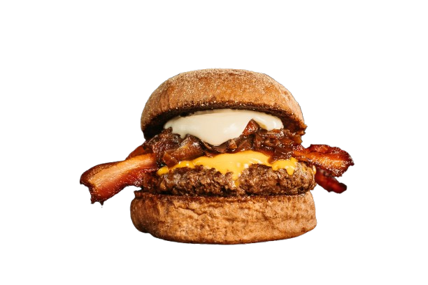

<footer class="main-footer">
    <div class="footer-container">
        <div class="footer-content">
            <div class="footer-section">
                <div class="footer-logo">
                    
                    <span class="footer-logo-text">MAYSON BURGUER</span>
                </div>
                <p>Sistema completo de gestão e controle de pedidos para restaurantes</p>
            </div>
        </div>
        <div class="footer-bottom">
            <p>&copy; 2026 MAYSON BURGUER - Sistema de Gestão Administrativa</p>
        </div>
    </div>
</footer>

<style>
.main-footer {
    background: rgba(18, 55, 42, 0.95);
    backdrop-filter: blur(12px);
    -webkit-backdrop-filter: blur(12px);
    border-top: 1px solid rgba(251, 250, 218, 0.05);
    padding: 40px 0 20px;
    margin-top: 50px;
}

.footer-container {
    max-width: 1200px;
    margin: 0 auto;
    padding: 0 20px;
}

.footer-content {
    display: flex;
    justify-content: center;
    margin-bottom: 30px;
}

.footer-section {
    text-align: center;
    max-width: 500px;
}

.footer-section h4 {
    color: #FBFADA;
    margin-bottom: 15px;
    font-family: 'Inter', 'Segoe UI', sans-serif;
    font-weight: 600;
    font-size: 0.9rem;
    text-transform: uppercase;
    letter-spacing: 1px;
}

.footer-section p {
    color: rgba(251, 250, 218, 0.4);
    font-family: 'Inter', 'Segoe UI', sans-serif;
    font-size: 0.85rem;
    line-height: 1.6;
}

.footer-logo {
    display: flex;
    align-items: center;
    justify-content: center;
    gap: 12px;
    margin-bottom: 12px;
}

.footer-logo-img {
    width: 40px;
    height: 40px;
    object-fit: contain;
    filter: drop-shadow(0 0 20px rgba(251, 250, 218, 0.08));
}

.footer-logo-text {
    font-size: 1.2rem;
    font-weight: 700;
    color: #FBFADA;
    font-family: 'Inter', 'Segoe UI', sans-serif;
    letter-spacing: -0.5px;
}

.footer-bottom {
    border-top: 1px solid rgba(251, 250, 218, 0.05);
    padding-top: 20px;
    text-align: center;
    color: rgba(251, 250, 218, 0.2);
    font-family: 'Inter', 'Segoe UI', sans-serif;
    font-size: 0.8rem;
}

@media (max-width: 768px) {
    .footer-content {
        flex-direction: column;
        text-align: center;
    }
    
    .footer-logo {
        justify-content: center;
    }
}
</style>